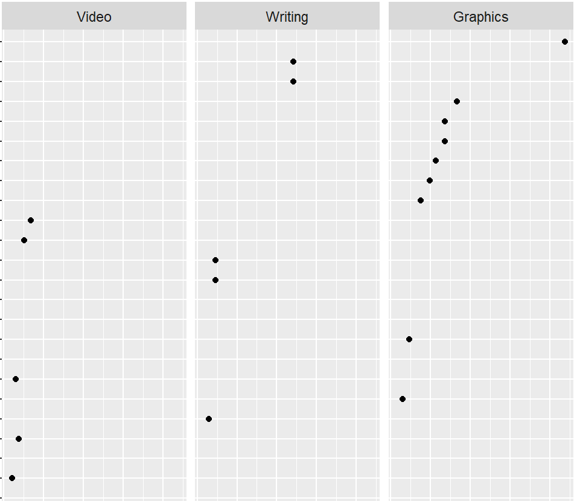
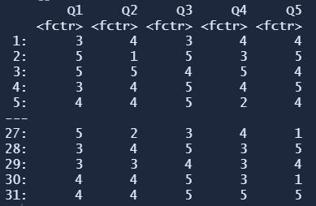

My blog at graphdoctor.com redirects here. I intend to gradually port my earlier posts to this site.

Using the scales and space arguments of facet_grid() to manage panel heights of faceted charts when categories are not independent.

How to prepare different forms of Likert-style survey data for the R likert package and edit the results to create 100% stacked-bar charts.